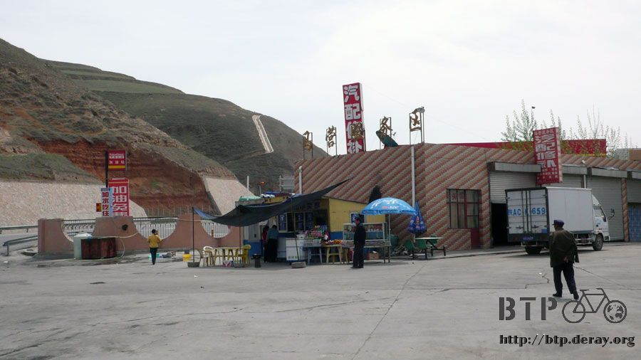
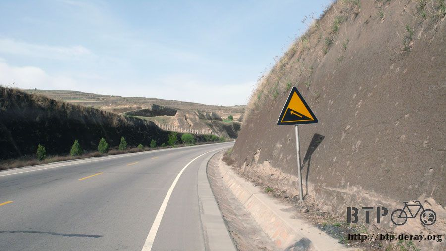

On the way to Lanzhou
It was late when I settled down for the night yesterday. I finished my dinner after 9:00pm,
and then stayed up till midnight writing my trip log.
I work up before 6:00am as usual, but slept in till 8:00am because today’s ride was short, about 80 km.
Before set off, I was thinking of buying a bag of brown sugar for making hot brown sugar water,
but could not find a place selling it. Moreover, my powder drink mix was running low, only one bag of Milo left. I needed to stock up.
I wanted to take the same road that I used yesterday, but I was stopped by the toll booth operator,
he said that bicycles were not allowed on the road.
The operator was right. I saw a road sign saying this road was for cars, but I had no idea why I could get on yesterday.
“I got off the road for accommodation yesterday and how come I could not get back on today?”
I said to the operator
“Bicycles are not allowed on the road by the book, I am not sure why the previous operator would allow you to get on”
said the operator
Perhaps I was able to clearly describe how I got on the road at Taian the day before
and what I had planned to continue riding to Dingxi on the same road for today.
The operator was finally convinced that I knew what I was doing and let me get back on the road.
“Very well” shouted in my mind.
There was only one rest area between Tongwei and Dingxi, about 26 km from Tongwei.
This ride could be exceptionally boring since there were only two places to explore,
the rest area and Dingxi, and nothing along the way.

I decided to ride casually to the rest area, Maying, for lunch.
Nothing happened all the way to Maying except that some honey bees bumped into my head which happened so fast
that I did not have time to react and dodge them.
The bump did not hurt, but it was a very solid hit.
After several honey bee “collisions”, I arrived at Maying.
I had scallion scrambled eggs and large serving of rice for lunch. The food was quite tasty.

The morning ride was easy and short so I did not take a break after lunch,
but continued riding toward Dingxi. Hopefully I could find a place to sleep earlier today.
The sun was mild the whole day long. The temperature was cool at 2000m above sea level.
Even at high noon, the temperature was still around 20 degree Celsius.
The ride was boring, but it was smooth. I did not expect anything fun before arriving at Lanzhou.
If someone stopped me right now and asked me where I was going, I would not hesitate to reply
“on the way to Lanzhou”

There were some terraced fields along the road, but nothing grew in the fields.
Was it because that Gansu province was short of water?

There were no shops along the way, I did not even have a chance to waste my money.
I just listened to the music and had my mind go blank while riding, or played the game
“guess the vehicle type by listening to its horn” when I got bored.
I got into Dingxi at 3:00pm which was ahead of my schedule.
I thought Dingxi was a small town, but it was the size of a city.

I wandered around Dingxi on Dido. There were quite a few hotels.
I wondered if there were many people who came here specifically for the accommodations.
I was looking for a hostel close to Internet cafés, so I could walk over to the Internet café in my slippers from the hostel.
I had no idea why it became harder to communicate even though I was speaking Mandarin.
It was no longer necessary to mimic a Beijing accent.
Now, I spoke with my Taiwanese accent so I could pronounce words better and made it easier for me to communicate.
The room rate was 20 RMB for one night. But for today,
I cared less about the room rate than to find a place where I could take a shower and do laundry.
I had not showered for three days, and my clothes and socks had not been washed for three days as well.
I wanted to buy laundry detergent powder which was much more effective than soap.
The hotel clerk loaned me a bag when he learned that I wanted to do my laundry.

I went to the restroom, filled a washing up bowl from the faucet,
then took sponge bath and washed my hair. Only half way through,
somebody knocked on the door and said “stop washing, we are flooded”
Oh, man! I looked down and found no drainage hole in the floor.
The dirty water flowed through the door and ran from the second floor to the first floor along the staircase.
When the hotel clerk on the first floor saw the water coming down, he hurried up to stop me.
The situation was not so bad, only restroom, corridor, two empty rooms,
staircase and first floor were flooded. I got the hotel into trouble within 10 minutes of checking in!
The hotel clerk swept the water into a dustpan, scooped the water into a washing up bowl,
and then poured the water into toilet. I helped pouring water into the toilet to express my regret.
It took half an hour to take care of the “disaster”. I was terribly sorry.
Later on, I was very careful when washing clothes.
I poured the dirty water into the toilet and did not let any water get onto the floor.
Finally, I felt squeaky clean and my clothes were hung to dry.
Tomorrow, I could continue my journey in the same clothes with the nice scent of detergent powder.
If everything went smoothly as planned, I would be in Lanzhou tomorrow.
I had Lanzhou beef noodle for dinner at the restaurant next door.
Even with no beef in the noodles, the noodle soup was excellent and worthy every penny.
In addition, the noodle was made right in front of me after asking me what kind of noodle I liked, wide or thin.
I enjoyed watching noodle making. The taste of the hand-rolled noodle was excellent.
The cashier register showed 2.9 RMB for my dinner.
I never wanted to keep the ten RMB cents change so I always bought more to round up the number.
This time I needed five beef noodles to round it up, a bit too much for my stomach.
I said “do you accept tips?” then left the ten RMB cents at the cashier. The cashier took the change with a smile.
The brown sugar was sold at the “Cigarette, Sugar, and Alcohol Wholesale Department of Dingxi”,
a large bag of the brown sugar was just 2.5 RMB. The sugar was a bit hard but the taste was the same.
Drinking the brown sugar water before sleep warmed up my body and made me feel comfy.